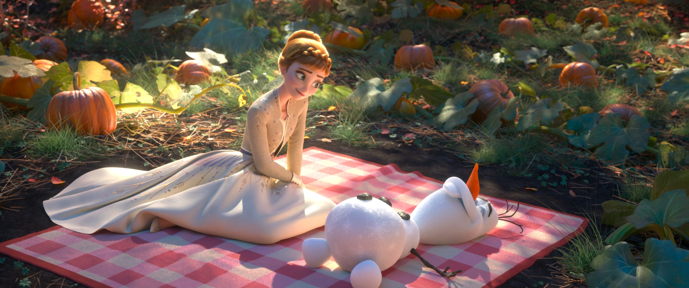
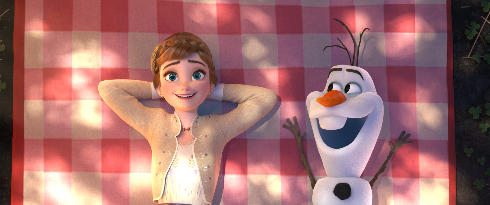

Some Things Never Change
全员合唱 · 时长 3:29
🎧 聆听原声 · 双语歌词
Anna:
安娜：
Yes, the wind blows a little bit colder
是的，风吹得有点更冷了
And we're all getting older
我们都在变老
And the clouds are moving on with every autumn breeze
云朵随着每一阵秋风飘走
Peter Pumpkin just became fertilizer
南瓜彼得刚刚变成了肥料
Olaf:
雪宝：
And my leaf's a little sadder and wiser
我的叶子也更忧伤、更睿智了
Anna:
安娜：
That's why I rely on certain certainties
这就是为什么我依赖某些确定的事
Yes, some things never change
是的，有些东西永远不会变
Like the feel of your hand in mine
比如你牵着我的手的感觉
Some things stay the same
有些东西始终如一
Anna & Olaf:
安娜与雪宝：
Like how we get along just fine
比如我们相处得很好
Anna:
安娜：
Like an old stone wall that'll never fall
像一堵永远不会倒塌的古老石墙
Some things are always true
有些东西永远真实
Some things never change
有些东西永远不会变
Like how I'm holding on tight to you
比如我紧紧抱着你
Kristoff:
克里斯托夫：
The leaves are already falling
树叶已经在落下
Sven, it feels like the future is calling
斯文，感觉未来在召唤
Kristoff (as Sven):
克里斯托夫（扮斯文）：
Are you telling me tonight you're gonna get down on one knee?
你是说今晚你要单膝跪地吗？
Kristoff:
克里斯托夫：
Yeah, but I'm really bad at planning these things out
是啊，但我很不擅长计划这些事
Like candlelight and pulling of rings out
比如烛光晚餐和掏出戒指
Kristoff (as Sven):
克里斯托夫（扮斯文）：
Maybe you should leave all the romantic stuff to me
也许你应该把浪漫的事交给我
Kristoff:
克里斯托夫：
Yeah, some things never change
是啊，有些东西永远不会变
Like the love that I feel for her
比如我对她的爱
Some things stay the same
有些东西始终如一
Like how reindeers are easier
比如驯鹿更容易相处
But if I commit and I go for it
但如果我全心投入、勇敢去做
I'll know what to say and do
我就知道该说什么、做什么
Right?!
对吧？！
Kristoff (as Sven):
克里斯托夫（扮斯文）：
Some things never change
有些东西永远不会变
Kristoff:
克里斯托夫：
Sven, the pressure is all on you
斯文，压力全在你身上了
Elsa:
艾莎：
The winds are restless
风焦躁不安
Could that be why I'm hearing this call?
这就是我听到呼唤的原因吗？
Is something coming?
有什么要来了吗？
I'm not sure I want things to change at all
我不确定我是否希望一切改变
These days are precious
这些日子弥足珍贵
Can't let them slip away
不能让它们溜走
I can't freeze this moment
我无法冻结这一刻
But I can still go out and seize this day
但我仍然可以走出去，把握这一天
Chorus:
合唱：
Ah ah ah ah ah ah
啊……
The wind blows a little bit colder
风吹得有点更冷了
Olaf:
雪宝：
And you all look a little bit older
你们看起来都老了一点
Anna:
安娜：
It's time to count our blessings
是时候细数我们的祝福
Anna & Kristoff:
安娜与克里斯托夫：
Beneath an autumn sky
在秋天的天空下
Chorus:
合唱：
We'll always live in a kingdom of plenty
我们将永远生活在丰饶的王国
That stands for the good and the many
为大众与正义而立
Elsa:
艾莎：
And I promise you the flag of Arendelle will always fly
我向你承诺，阿伦戴尔的旗帜永远飘扬
Anna:
安娜：
Our flag will always fly
我们的旗帜永远飘扬
Chorus:
合唱：
Our flag will always fly
我们的旗帜永远飘扬
Our flag will always fly
我们的旗帜永远飘扬
All:
全员：
Some things never change
有些东西永远不会变
Turn around and the time has flown
一转身，时光已飞逝
Some things stay the same
有些东西始终如一
Though the future remains unknown
尽管未来仍未知
May our good luck last
愿好运长存
May our past be past
愿过去成为过去
Time's moving fast, it's true
时光飞逝，确实如此
Some things never change
有些东西永远不会变
Anna:
安娜：
And I'm holding on tight to you
而我紧紧抱着你
Elsa:
艾莎：
Holding on tight to you
紧紧抱着你
Olaf:
雪宝：
Holding on tight to you
紧紧抱着你
Kristoff:
克里斯托夫：
Holding on tight to you
紧紧抱着你
Anna:
安娜：
I'm holding on tight to you
我紧紧抱着你
来源：Disney 官方 / Frozen II (2019) 原声带
📄 🎯 歌曲定位
“Some Things Never Change” 是《冰雪奇缘2》（2019）的开场群唱曲，由 Kristen Bell（安娜）、Idina Menzel（艾莎）、Josh Gad（雪宝）、Jonathan Groff（克里斯托夫）及卡司共同演唱，时长 3:29。它接在“All Is Found”摇篮曲之后，以一首温暖的“日常赞歌”展开续集，呈现阿伦戴尔平静岁月里众人的日常。
📄 💡 内涵与主题
歌曲主题是“变与不变”的辩证：风吹得更冷、大家都在变老、南瓜彼得化为肥料、树叶飘落——外在万物都在变，但“有些东西永远不会变”，如牵手的温度、相处的默契、对彼此的爱与承诺。它既是对前作姐妹情与友情的回响，也暗藏一丝不安：艾莎独唱段“风焦躁不安……我不确定我是否希望一切改变”已泄露她心底被神秘呼唤搅动的波澜，为随后的“Into the Unknown”埋下伏笔。
📄 🎬 在电影中的作用
作为续集第一首角色歌曲，它承担“建立新常态”的功能：安娜知足于确定性、雪宝更“忧伤而睿智”、克里斯托夫借斯文之口盘算求婚（呼应前作“Reindeer(s) Are Better Than People”），而艾莎则在安然表象下首次听见那阵呼唤。歌曲以全员“紧紧抱着你”的叠句收束，把“不变的爱与羁绊”设为全片情感锚点，使后续冒险的分离与成长更具分量。
📄 🌱 来源与创作灵感
由回归的奥斯卡词曲搭档 Kristen Anderson-Lopez 与 Robert Lopez 创作（二人亦参与续集故事开发）。导演 Jennifer Lee 曾表示，续集歌曲“反映了角色的成长与故事的深化”。这首 opener 的设计理念是用一首亲切、近乎生活化的合唱，让观众在熟悉感中重新进入阿伦戴尔，再以艾莎的不安撕开平静，自然过渡到主线召唤。
📄 🛠️ 制作过程
歌曲收录于 2019 年《Frozen II》原声带，由 Kristen Anderson-Lopez & Robert Lopez 创作、Stephen Oremus 指挥声乐编排、Tom MacDougall 等制作。四位主演在 D23 Expo 现场首唱此曲，展现“角色成长后更成熟声线”的编排。克里斯托夫与“斯文”的对话式对唱延续了前作木偶戏般的幽默，是片中少数让真人演员以角色/动物双声演绎的段落。
📄 🔍 解析与评价
乐评多将其定位为续集稳健而讨喜的 opener：它不像“Let It Go”或“Into the Unknown”那样有爆发式 anthem 气质，而以平实温暖的旋律承担“承上启下”。部分评论认为它稍显安全，但正是这种“日常感”让艾莎随后的内心冲突更有反差；粉丝则喜爱其中克里斯托夫求婚支线与全员合声的治愈氛围。
📄 🌍 文化影响与获奖
随《Frozen II》原声带登顶 Billboard 200 并成为年度热门，“Some Things Never Change”作为开场曲被纳入多语种版本（全球数十种语言配音）。它未单独获奥斯卡提名，但作为续集情感基调的奠定者，常与“Into the Unknown”“Show Yourself”一并出现在官方单曲与现场演出歌单中。



